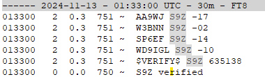

Thanks for this, Steve!
From: Chat <chat-bounces@ncdxc.org> On Behalf Of Steve Dyer W1SRD via Chat
Sent: Tuesday, November 12, 2024 17:40
To: 'Chat NCDXC' <chat@ncdxc.org>; mldxcc@groups.io
Subject: [NCDXC Chat] WSJT-X SuperFox RC7 Verification Setup Instructions for S9Z
To get the new SuperFox verification scheme working with 2.7.0-rc7 and greater you also need to install OpenSSL libraries.
Go to https://sourceforge.net/projects/wsjt-x-improved/files/Additional%20Files/OpenSSL/ and download the appropriate Win32 or Win64 1_1_1a msi file.
Install it and let it place the library files in the Windows system directory. You can uncheck the donate box at the end or make a donation.
Close WSJT-X and restart.
Go to the Settings -> Advanced tab and check the OTP box.
You should now see the "S9Z verified" message in the Band Activity window.
Upgrading to RC7 also stops any QU1RKS call signs in the Actvity window as well.
I did this testing using WSJT-X Improved v2.7.1-devel 241014-RC7
Does verification matter? That's up to you to decide.
73,
Steve
W1SRD
PS:
If you also check "Show OTP messages" you will see:

Note: If you see the $VERIFY$ not followed S9Z verified, you have not correctly installed OpenSSL.
PPS:
Using a browser go to the "OTP URL:" which is https://www.9dx.cc and you can manually compare the $VERIFY$ message (635138 in this case) you are receiving with what is show on the browser screen. Be sure to match time stamps as the number is a One Time Password and changes every 30 seconds. Software wise this is like Google Authenticator.